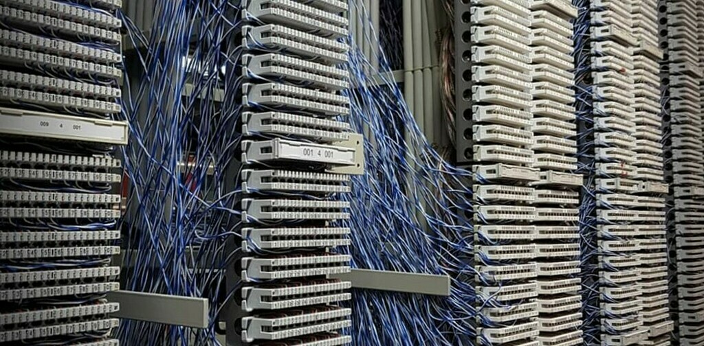
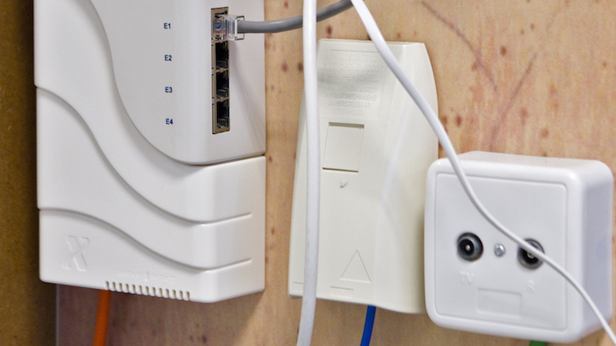
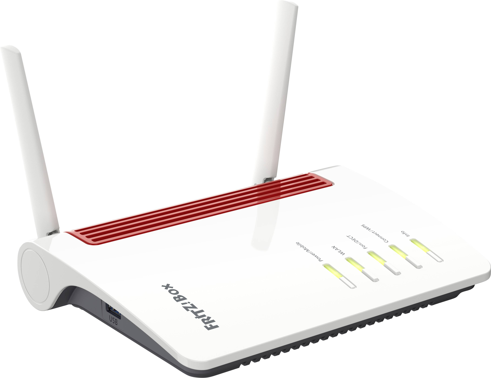
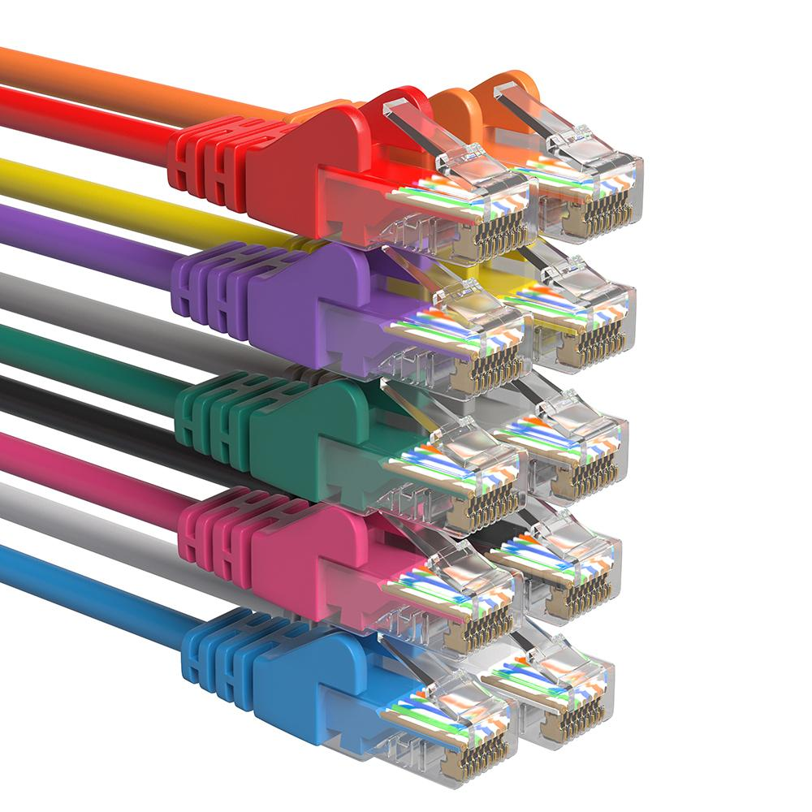
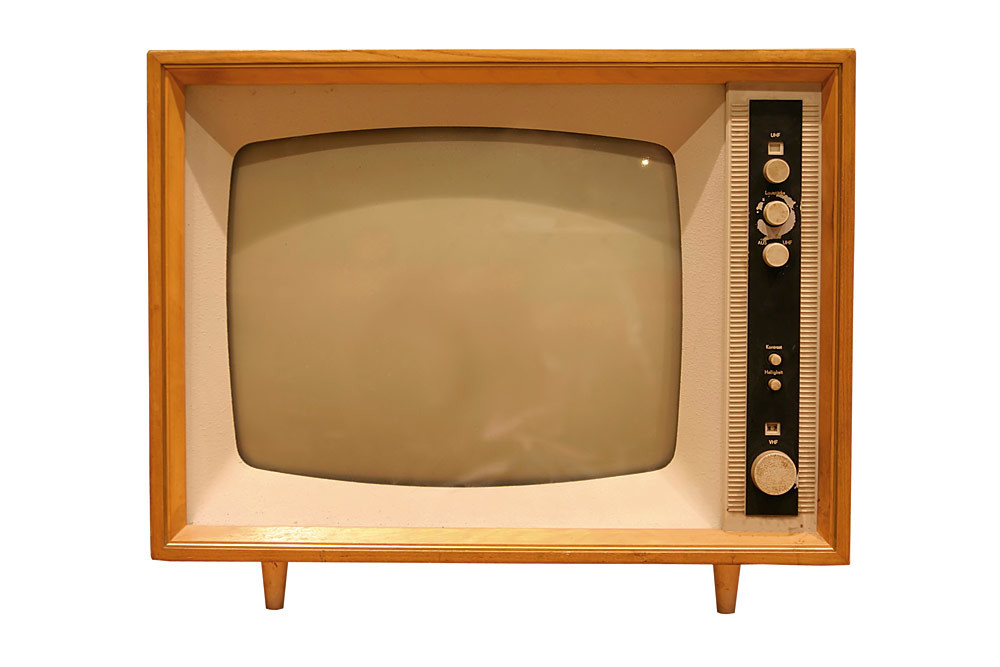

Binnen een bedrijf of woning kan er in de basis op drie manieren internet het pand binnen komen over de drie meest voorkomende zogenoemde “dragers".
Dit zijn de coax kabel (Radio/TV), de telefoonkabel (KPN) en tegenwoordig de glasvezelkabel.
Of je van alle drie dragers gebruik kunt maken in jouw pand is afhankelijk van het gebied waarin je woont.
| Provider | ISP | wijkcentrale | Huisaansluiting |
|---|---|---|---|
|
 |  | |
| Router | UTP kabel | Telefonie | Televisie |
|  |  |  |